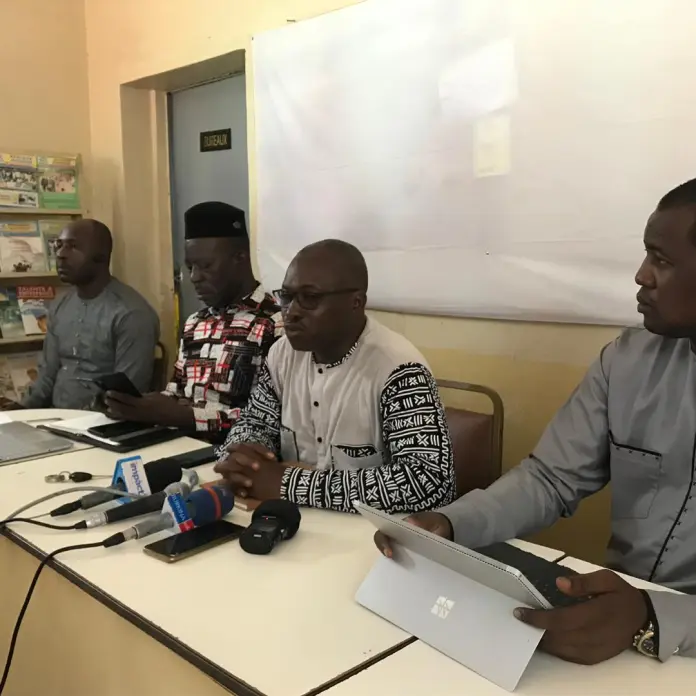
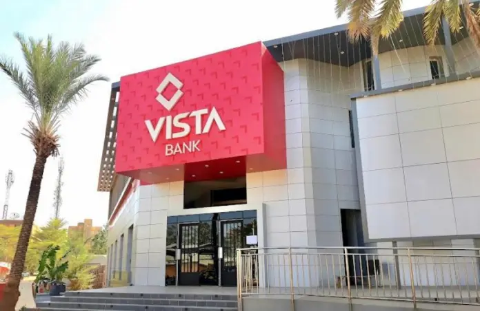
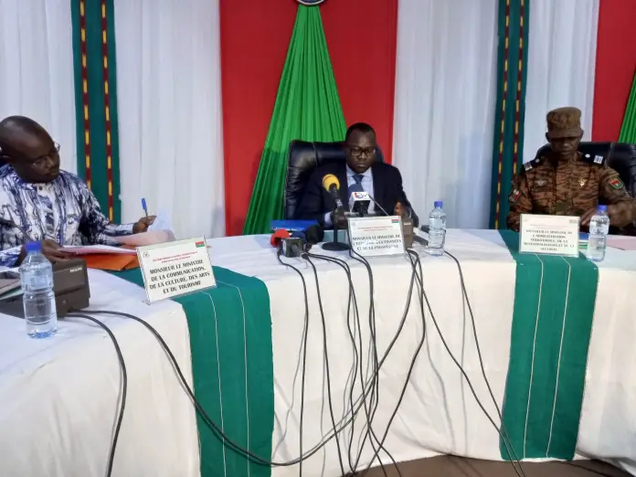
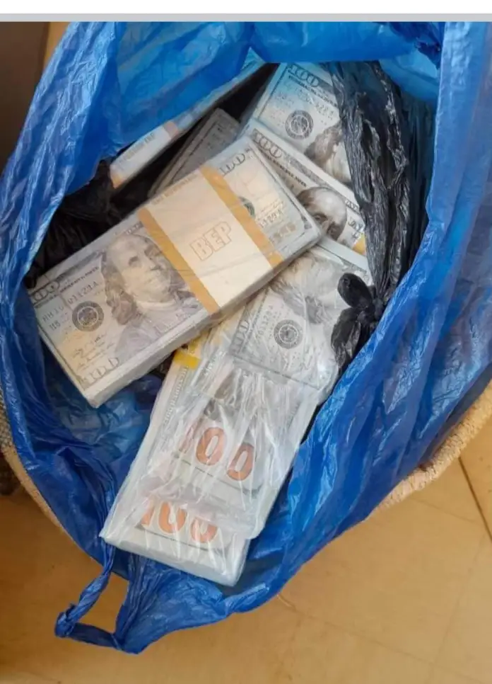

« Les préoccupations des clients bien que légitimes interviennent à un moment où les opérateurs de téléphonie mobile au Burkina Faso sont confrontés à de nombreuses difficultés », ont expliqué les sociétés de télécommunications qui évoquent, entre autres, l’impact direct de l’inflation sur les coûts de la fourniture, le saccage des infrastructures, parmi lesquelles plus de 800 sites hors service du fait de l’insécurité, et l’augmentation de la taxe sur le chiffre d’affaires, passée de 5% à 7% en 2020.

« Les consommateurs sont dans des difficultés financières en cette période de crise. La ligue craint que ceux-ci ne se tournent vers les médicaments de la rue. La ligue informe l’opinion nationale et internationale, qu’elle se réserve le droit d’orienter le choix des consommateurs vers les pharmacies qui ne prennent pas en compte l’augmentation », s’est exprimé Dasmané Traoré, Président de la Ligue des consommateurs.

L’acquisition des banques de Société Générale au Congo-Brazzaville et en Guinée équatoriale constitue une avancée majeure dans notre stratégie d’expansion, visant à devenir un groupe bancaire panafricain présent dans 25 pays. Le Groupe Vista s’engage à soutenir la croissance économique en Afrique, s’est exprimé le président du Groupe Vista Simon Tiemtore sur le sujet.

20 752 574 695 francs CFA ont été mobilisés à la date du 02 juin 2023, à travers le Fonds de soutien patriotique, a annoncé lundi, le ministre de l’Economie, Aboubacar Nacanabo, également vice-président du conseil d’orientation du Fonds de soutien patriotique, lors de la deuxième session dudit conseil. Cette somme représente comparativement au bilan de la première session – 7 754 043 516 francs CFA à la date du 31 mars 2023- une augmentation de 162%, selon le ministre Aboubacar Nacanabo.
Ce samedi a été une chaude journée pour les commerçants du marché à bétail de Ouaga-Inter, au quartier Toyibin, côté sud-est de l’aéroport de Ouagadougou. C’est très tôt le matin que les commerçants ont reçu la visite peu amicale des forces de sécurité.

Des faux billets en dollars d’une valeur de plus de 550 millions de francs CFA ainsi que 56 faux lingots d’or ont été saisis le 19 mars 2023, a annoncé ce mardi le service de communication de la Direction générale des Douanes.
C’est une opération menée par la Brigade de Recherche et d’Intervention des Douanes appuyée par la Police de Baskuy. Le butin comprend également « des galons de l’armée de l’air, 02 bérets de la Douane, des appareils de communication et de faux cachets Douane» peut-on lire dans la publication.